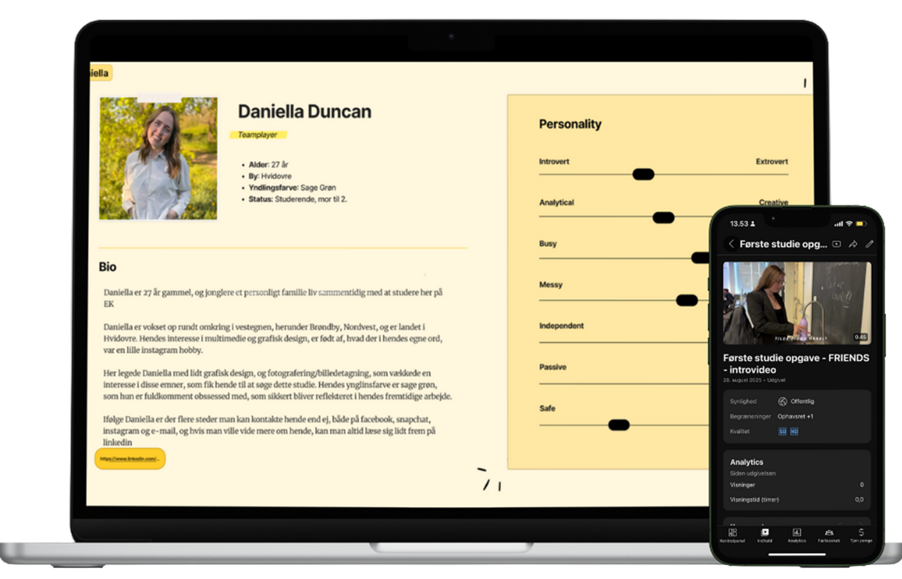

TEMA 1 - INTROUGE
På tema 1 er vi blevet introduceret til, hvad en multimediedesigners arbejdsopgaver indebærer. Vi har arbejdet med grundlæggende, tværfaglige principper inden for planlægning, design, udvikling og optimering af digitale brugergrænseflader.
Temaet har givet mig et godt overblik over uddannelsen og de værktøjer, vi kommer til at arbejde med fremadrettet.
PRÆSENTATIONSKORT
En af de første opgaver, vi arbejdede med i Figma, var et digitalt præsentationskort. Formålet med opgaven var både at lære de grundlæggende værktøjer i Figma at kende og at lære hinanden bedre at kende i klassen.
Kortet blev lavet ud fra en makker, som man blev tildelt. Herefter interviewede jeg min makker om blandt andet, hvem personen er, deres hobbyer og eventuelle joberfaringer. Præsentationskortene blev til sidst samlet og afleveret i et fælles Figma-dokument.
Processen i denne opgave var en rigtig god oplevelse. Det var en sjov og anderledes måde at lære hinanden at kende på og samtidig øve samarbejde. Vi havde en god dialog under interviewet og et fint samarbejde omkring brugen af Figma, hvor min makker havde en smule erfaring med designværktøjer.
Der opstod dog enkelte kommunikationsudfordringer undervejs, blandt andet i forbindelse med udveksling af billeder, da vi ikke havde hinanden på sociale medier. Det gav lidt udfordringer i forhold til at få kontakt og få billeder til kortet, men det løste sig i sidste ende, og vi nåede frem til et tilfredsstillende resultat.
VIDEO
Under introforløbet har vi også arbejdet med videoproduktion i grupper.
Her har vi i fællesskab planlagt, optaget og redigeret en video, som efterfølgende blev vist for resten af klassen. Formålet med opgaven var både at lære hinanden bedre at kende og at få erfaring med samarbejde og gruppearbejde.
Se video her
Et af kravene til videoen var, at alle gruppemedlemmer skulle medvirke, enten med billede eller video, og at videoen skulle indeholde navnene på de medvirkende. Den færdige video skulle have en varighed på 1–2 minutter og uploades til
YouTube, hvorefter linket blev afleveret på Itslearning.
Inden vi gik i gang, blev vi introduceret til viden om serie- og filmintroer, hvor der blandt andet var fokus på kamerabevægelser, perspektiv og fortælling.
Undervejs i processen skulle vi udvikle idéer og blive enige om et fælles koncept. I vores gruppe blev vi hurtigt enige om at lade os inspirere af introen til tv-serien Friends. Vi brainstormede forskellige idéer, og da vi endnu ikke kendte hinanden særlig godt, valgte vi en relativt simpel løsning med korte klip af hver deltager, som til sidst blev samlet til en fælles intro.
Selvom vi ikke havde det store kendskab til hinanden på forhånd, forløb både filmning og redigering meget glidningsfrit, og der var hurtigt en fra gruppen, som tog ansvar for redigeringen.